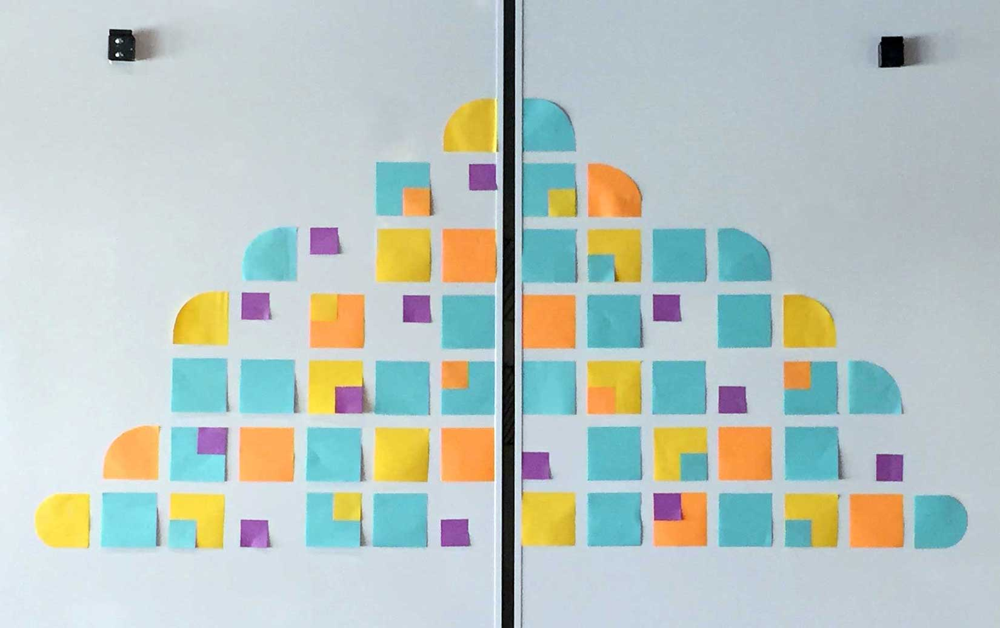
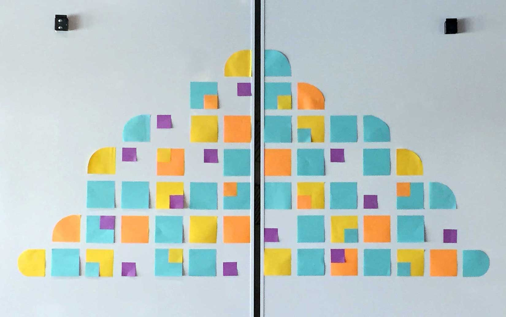

Role
At IBM Design I worked on the Core Practices Team, creating and delivering tools and resources to help diverse teams work better together, and further a user-centric design culture. My work focused on furthering the craft, practice, and scalability of design across IBM’s business units.
I have had the fortune to play multiple roles, conducting research, wireframing experiences, and designing systems and final assets for a range of projects. Most recently I developed the visual system for the IBM Design Research site. Previously, I led the design of a flexible type and spacing system for IBM Design Thinking site and future ibm.com/design properties. Other roles include: contributor designer to IBM Design Language, assistant researcher for app request from the Chairman, lead designer for office wayfinding system, motion graphic design for SXSW 2015 Event, and contributor designer to the IBM Studios Austin: Guide to Everything, an onboarding resource for new hires. Below are a few images of my process, practice, and deliverables from the past two years.


 
